성격은 단순하고 밝으면서 활동적이라, 배구부 2학년 선배인 타나카 류노스케처럼 1학년의 무드 메이커. 야치 히토카는 공부를 가르쳐 준 뒤 '직사광선을 계속 쐰 기분'이라 평했다. 앉아 있는 것 자체가 고역이라 공부를 싫어한다. 카라스노 배구부의 바보 사대장(카게야마, 히나타, 타나카, 니시노야)에 속했다. 이들은 공부를 매우매우 못한다.
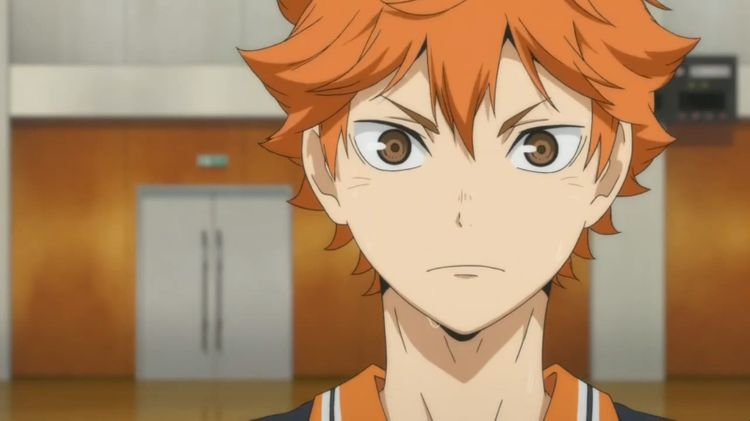
키타가와 중학교 시절 2학년들이 카게야마만 봐도 벌벌 떨었던 걸 보면 후배들에게도 포악했던 모양이다. 이때 후배들에게 학교 이름을 팔지 말라고 하는데, 말이야 바른 말이지만 표정이 너무 무서워서 히나타도 좋지 못한 시선으로 봤을 정도였다.
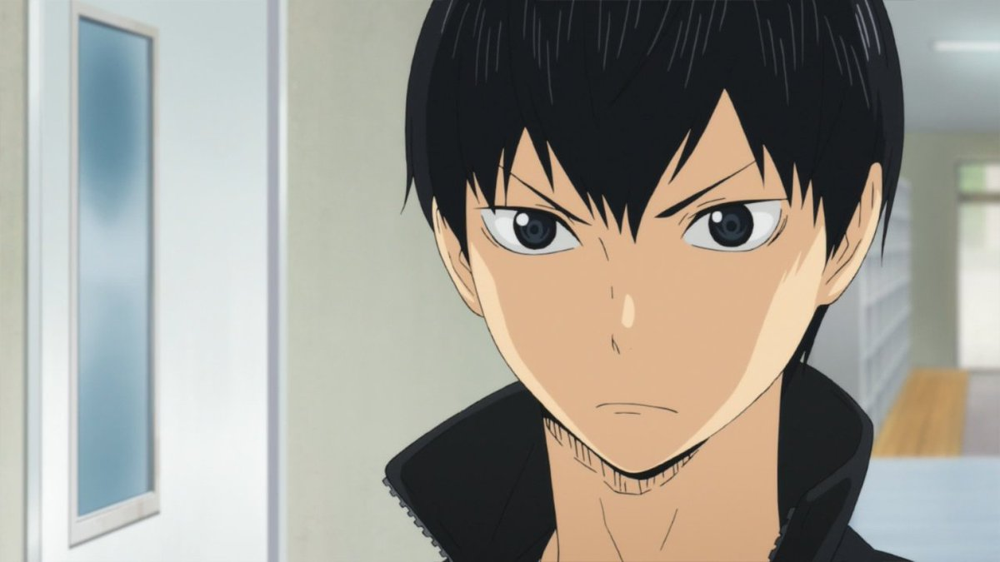독설가에 냉소적이며, 남을 비꼬는 데에 거리낌이 없는 성격이다. 작중에선 어그로에 있어 가장 독보적인 모습을 보인다. 심지어는 어떤 말을 내뱉든 간에 표정 변화도 전혀 없다. 자극적인 단어 하나 없이, 평범하고 일상적인 말만 골라서 나긋나긋하게 상대의 기분을 완전히 조져놓는 재능이 있다.
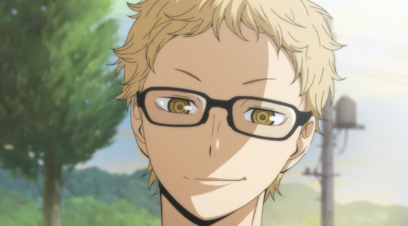츠키시마와 대조적으로 밝고 수다스러운 면이 있지만 어렸을 때부터 소심했던 성격은 크게 변하지 않은 듯 하다. 그러나 소심한 성격과 달리 츠키시마가 단순한 부활동에 불과한 것에 그렇게 집착할 이유가 뭐가 있냐는 식으로 말하는 등 의욕 없는 모습을 보이자 분노하며 '그런 거 프라이드말고 뭐가 있겠어!' 라면서 화내는 의외의 모습도 보여준다.
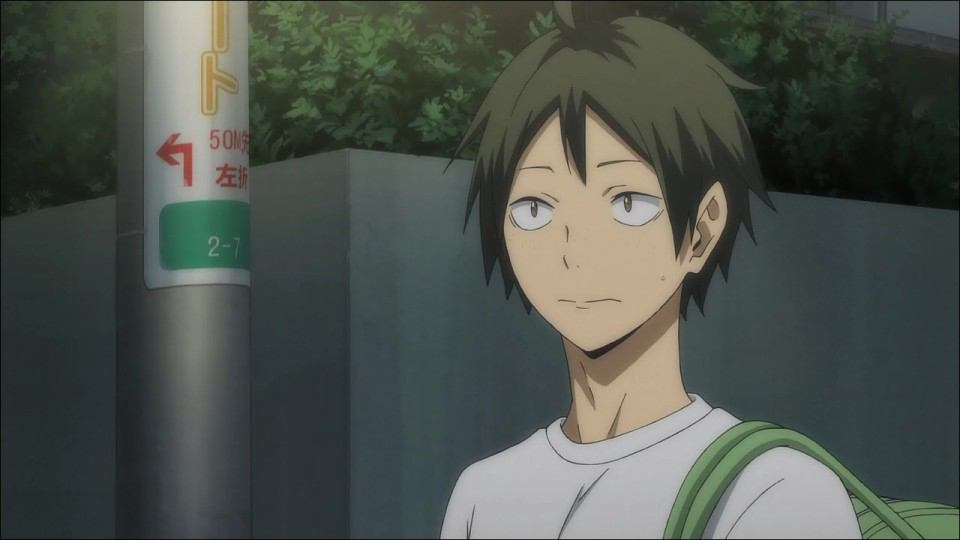한마디로 멘탈갑. (뒤끝 없는) 호쾌함 + 근성 + (위기에서의) 의연함 + 강한 승부욕이라는, 그야말로 스포츠 선수에 최적화된 성격을 가지고 있다. 섬세함은 좀 부족할 것 같아 보이지만, 의외로 팀원들이 위축되어 있으면 자연스레 텐션을 올리는 등 은근 팀원들의 멘탈까지 챙기는 면모도 있다. 덕분에 명대사를 많이 내뱉는다. 이 이유 때문에 한국 팬들은 노야를 '명언 제조기'라고 부른다.
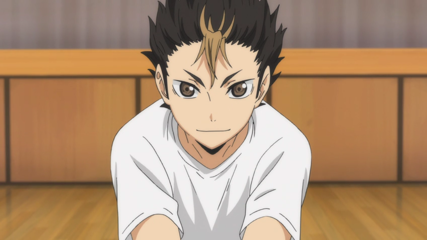반삭한 머리에 말투는 호전적이고 눈매도 사납다. 표정부터가 장난 아니다 덕분에 안 그래도 시커먼 카라스노 이미지를 더욱 험악하게 만드는 데 기여했다. 일단 처음 만난 상대에게는 기본적으로 험악하게 굴지만 좋은 사람이라 생각되면 친해져버리는 타입이라 볼 수 있다.
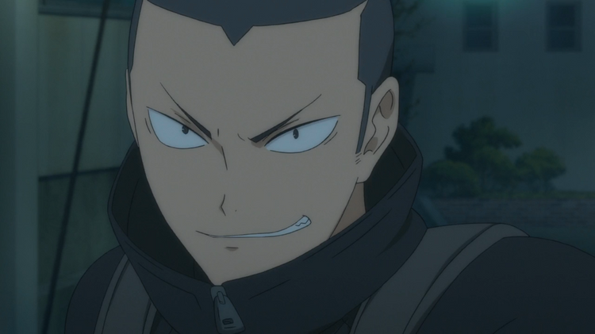처음에는 혼날 일도 없고 여가 시간도 널널해서 즐거워했지만 일탈의 즐거움도 잠시였고, 도망쳤다는 죄책감과 역시 배구가 하고 싶다는 생각에 3명 전부 다시 배구를 하기 위해서 돌아왔다.[2] 돌아왔을 당시 이미 우카이 감독은 쓰러져 없는 상태였다. 자기는 배구부 부원이 많지 않아서 이전 주장이 뻔뻔하게 돌아온 우리들을 눈감아 주었다고 생각하고 있다.
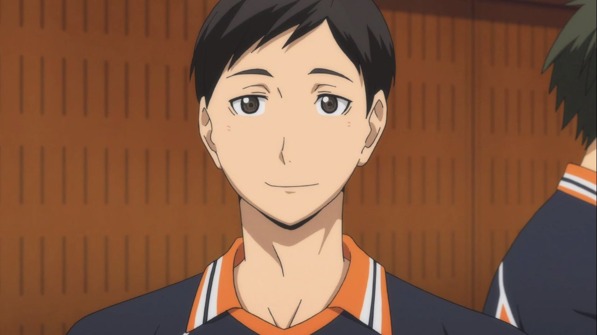주전이 아닌지라 공식 경기에 나간 적도 거의 없고 비중마저도 손에 꼽을 정도로 저조하다. 주로 하는 일은 좌석에서 응원하기 혹은 점수판 넘겨주기. 3학년 주전 중 두명, 차기 에이스 후보인 타나카가 WS이고 엔노시타 마저 WS이니 코트에서 활약하는 모습은 보기 힘들었으나(...) 단행본에서 점프플로터 서브를 연습하여 카라스노에서 유일한 핀치서버였던 야마구치와도 경쟁을 할 정도로 성장했다.
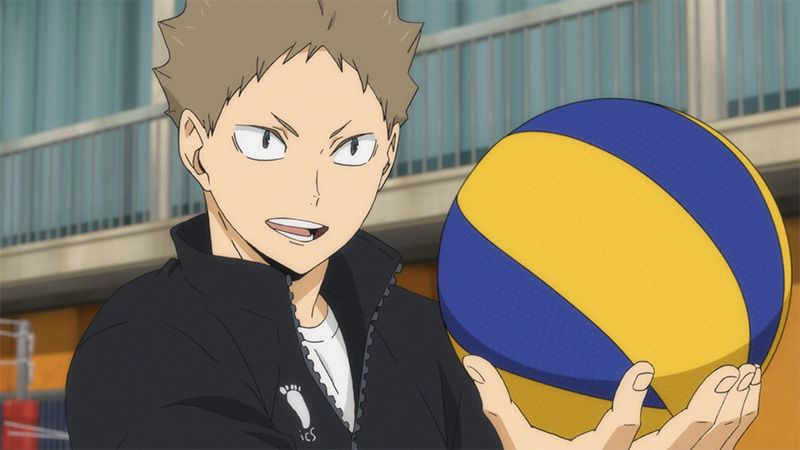키노시타와 엔노시타와 마찬가지로 비주전 선수지만 도저히 경기에 나올 가망이 안 보이는 키노시타와는 다르게[2] 때때로 경기에서 교체되고 득점을 하는 모습을 보인다. 이는 카라스노의 WS 라인이 대체로 안정적인데 비해[3] MB는 핀치 서버로만 활약하는 야마구치를 제외하고는 히나타, 츠키시마 밖에 없기 때문에 체력분배, 부상 등의 사유로 교체된다.
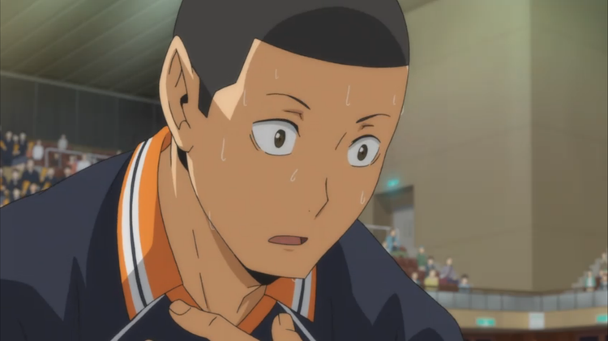성실하고 온화하며 어른스럽지만, 진심으로 화나면 매우 무섭다. 언뜻 봐선 마냥 자상할 것 같은 첫인상과 달리 화를 내면 무섭다는 언급이 자주 나온다. 아이캐치에서의 어마무시한 표정, 사와무라가 화내면 무섭다는 말이 나올 때 히나타와 카게야마가 즉시 숙연해지는 장면 등등 작중 여러차례 언급된다.
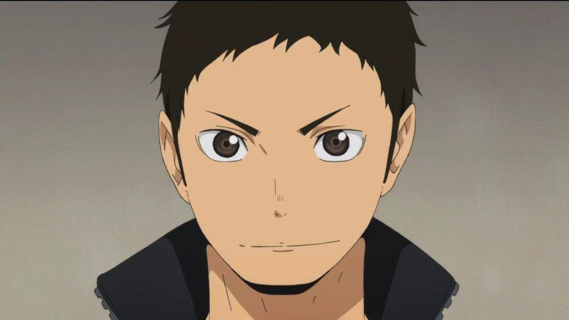온화한 성격으로 팀메이트를 생각하는 마음이 강해 일견 '천사표'로 보일 수 있지만, 작중에서 묘사되는 장면만 보더라도 타나카에게 가차없이 폭언을 하거나 장난도 잘 치고 후배들이 막 나가면 더 하라고 부추기거나(!) 아재개그를 치고는 혼자 좋아하는 등 남고생다운 면모가 많다. 마냥 순하다기보다는, 팀메이트를 위하는 희생 정신이 또래에 비해 강한 것에 가깝다.
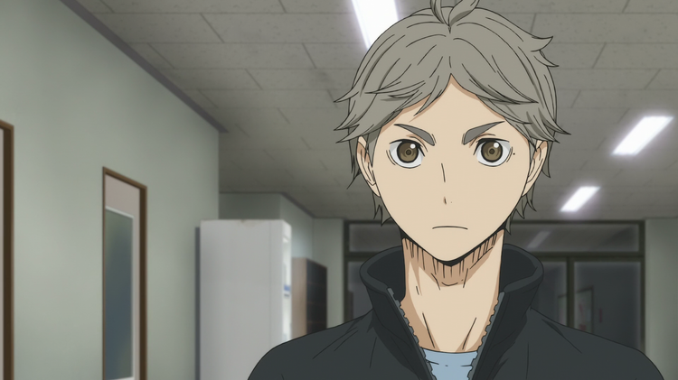우람한 덩치와 다르게 소심하며, 유리 멘탈을 넘어 순두부 멘탈의 소유자이다. 후배들에게도 자주 쩔쩔맨다. 주로 니시노야에게 태클을 걸리며 대회에 출전했을 때도 많이 긴장하는 모습을 보여준다.
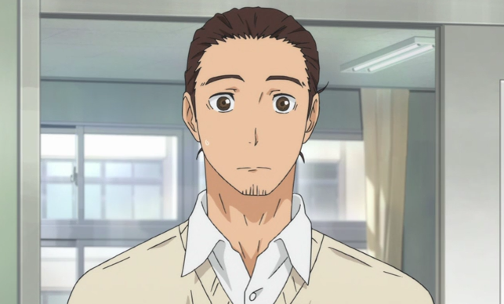